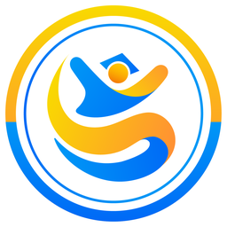
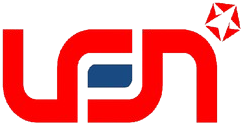

OCEAN NEXUS 2026
GFW Events
AIS Live
AI Inference
Memuat…
Kapal
0
Pesan
0
—


Kalman Lokal
Angin
AIS–SAR
Query & Track
Home
Wilayah Indonesia
Anomaly Alert Center
Data & Reports
GFW EVENTS
—
Fishing
Encounter
Loitering
Fishing
0
Encounter
0
Loitering
0
Lainnya
0
Pencocokan AIS–SAR (satelit)
×
Legend
Tipe Event
Fishing
Encounter
Loitering
Mengambil data GFW…
GFWR Query
Trajectory
Klik untuk memuat katalog…
Cari Kapal
Cari
Rentang Tanggal
Plot Trajectory
Hapus
AI Inference
✕
Memuat hasil inference batch terbaru...